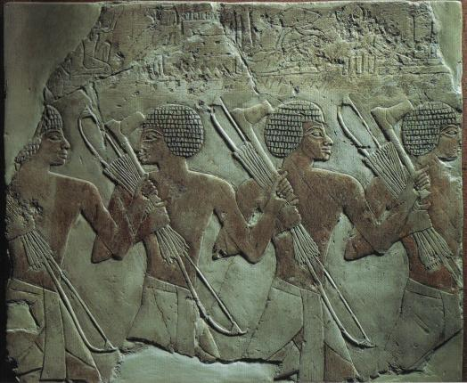

Nubia
I've always been fascinated with ancient Egypt. While immersing myself in tales and historical facts, I came across an equally fascinating cultural group: the Nubians. Residing in the southernmost portion of Egypt and in the current region of Sudan, the Nubians have a long and troubled history, most of which they spent thwarting attacks or resisting occupation. Invaders were interested in their vast wealth of gold mines—more than a hundred scattered over the eastern desert—ebony, ivory, frankincense, and decorative items such as ostrich feathers. On several occasions the invaders left behind imprints of their own culture: Egyptian, Roman, Christian, Arab, but the Nubians still maintained aspects of their unique civilization.
During the Middle Kingdom rule of Egypt, Lower Nubia was annexed, the Egyptian border extended to the Second Cataract where forts were constructed to protect their trade. One of these forts, Buhen, plays an important role in Time Meddlers on the Nile. Buhen had ramparts, battlements, loopholes, catapult stations and a moat, to name but a few. The site, upon first glimpse, would make one think of a Medieval fortress, although it was built between 1878 and 1843 BCE.This fortress was located not far from Abu Simbel, the temple Ramses the Great carved out of the bedrock in Upper Egypt.

Egypt eventually conquered Nubia in the Middle Kingdom time period as far as the Fourth Cataract. (A cataract is a series of rapids produced by jagged volcanic rocks in the Nile River.) But what was of real interest to me was the Late Period—the 24th to the 30th dynasties—a time when Nubia ruled over Egypt.
Kings of the Nubian Period
Piankhy's reign began in 736 BCE. On a Victory Stele, he proclaimed the conquest of Upper and Middle Egypt, mainly because the princes of Egypt were quarrelling amongst themselves and put the kingdom in jeopardy. The next king to take the throne was Shabaqo, a regent who conquered Lower Egypt in 715 BCE.
The prince who plays a pivotal role in Time Meddlers on the Nile isTaharqa. During this time period, 701 BCE, he is summoned to Jerusalem to assist King Hezekiah in repelling the Assyrians and preventing the city's capture. More information about this aspect of the plot is explained in the Historical Note. Taharqa became king in 690 BCE, but eventually met defeat at the hands of the Assyrians later in his rule. A series of other Nubian kings ascended the throne and faced conquerors, the defeat and recapture of Egypt, but the Nubian kingdom prevailed long after Alexander the Great marched into Egypt and began occupation.

A new period in Nubian history began in 653 BCE: the Napatan Dynasty. Several kings ruled during this time period, including Aspelta, mentioned in the novel. Aspelta was a king who had issues with the priests of Amun, particularly when they killed an innocent man. The Temple of Amun was located across the river from Napata, and archaeologists speculate that might be because the pharaohs and rulers of Nubia did not always respect or abide by the dictates of the priests.
The final period of Nubian rule began in 400 BCE, called the Meroitic kingdom. Meroë was constructed near the level of the sixth cataract and several ruins of pyramids and temples still exist today in that location.
Nubian Chronology
Third Intermediate Period (Egypt) 1080 -715 BCE
Power divided between North and South Egypt

736 BCE: Piankhy's Victory Stele; conquest of Upper and Middle Egypt
Late Period 715-330 BCE
25th to 30th Dynasty
715-653 Kushite kingdom of Egypt and Nubia
715 BCE: Shabaqo conquers Lower Egypt
690: Taharqa ascends the throne
674: Esarhaddon captures Memphis
664: Nekau I dies, Psamtik I and Tanutamun come to power
663: Thebes sacked by the Assyrians
656: Psamtik I reunites Upper and Lower Egypt
Names of 25th Dynasty pharaohs erased by Psamtik II
653: Beginning of Napatan Dynasty (Atlanersa, Anlanmani, Aspelta, Aramatilqo, Irike-Amanote)
525: Cambyses conquers Egypt
400: Beginning of Meroitic kingdom (Harsiotef, Akhratan)
389: Nephrites I liberates Egypt
341: Artaxerxes re-conquers Egypt
330: Alexander conquers Egypt
Meroitic kings: Nastasen, Arkamani I
30: Octavian conquers Egypt, which becomes a Roman province
Meroitic kings: Amanishakheto, Natakamani, Amanitore
392 CE: Theodosius outlaws paganism
400 CE: End of Meroitic kingdom
Ta Seti—Land of the Bow
The Nubians were renowned for their prowess with the bow and arrow. Often bows were constructed from the stem of a palm branch or wood and horn, glued together, and sinew. In Time Meddlers on the Nile, Matt learns how to this is done.
"The prince had insisted that Matt construct his own bow and arrows—a rather interesting project. Taharqa, himself, used a composite bow, made of several pieces of wood and horn glued together, but they had no time for such a complicated construction for Matt. Instead they hacked off a single piece of wood from the stem of a palm branch and made string from sinew—as Matt had suspected. They used reeds for their arrows, tipped with barbed iron on occasion, but when that wasn't available, as was the case at this time, they used sharpened stones."

The Region of Nubia
Nubia was divided into two regions along the Nile River—Upper and Lower Nubia. Lower Nubia was to the north, like Lower Egypt, and encompassed the land between the First and Second Cataract. Upper Nubia was everything beyond the Second Cataract. This division was much like that of Egypt and Sudan today. Nubia was characterized by rock formations and desert, along with more fertile areas to the south swept with vast savannah fields and typical African wildlife: lions, elephants, zebra etc.
Cataracts are what define this section of the river—a succession of swift rapids tumbling over volcanic rock, hemmed in by cliff formations that created canyons. Often they marked the transition of one area of bedrock to another. They were important in ancient Nubia, because they had the ability to impede or prevent navigation on the river.
Geology holds the key to Nubia's diverse regions, just as it reveals transition zones. The first three formations are: limestone, sandstone, and a "basement complex" composed primarily of granite. The principal bedrock of the great valley of Egypt is limestone, a plateau drifted over with sand. A few miles north of Aswan, coarse, yellow Nubian sandstone takes over, covering a large area of the Sahara up to the conjunction of the two Niles (Blue and White) and into Libya. Underneath the sandstone is much harder granite.
From Khartoum to Aswan, the Nile flows over alternating zones of granite and sandstone, where the cataracts emerge. The granite is hard and resistant to erosion, generally leaving behind sharp ridges and spikes, separated by narrow, deep wadis (dry channels or canyons). The riverbed is narrow, steep-walled, broken by islands and cataracts (as described in Time Meddlers on the Nile, when Matt and Sarah take the plunge). The land in the granite area usually has very little fertile soil.
Sandstone, by contrast, is soft and runs horizontally, making level terraces and occasionally flat-topped remnants of higher formations, with some broad, shallow wadis. In these zones, there is often an alluvial floodplain, along one or both banks, as revealed in the description of Napata in Time Meddlers on the Nile:
The city rose from the floodplain, surrounded by emerald and golden fields and orchards, a colourful contrast to the sandy background of the desert. At first tiny circular mudbrick houses with flat roofs dotted the pathway. Then they rode past larger and larger walled estates constructed of pink stone. Matt spotted an even more impressive building, with glyph-covered stone columns and a wooden gateway at the end of a road of flagstones. Across the river an odd mountain rose, with sheer sides and a flat top like a butte in the North American West.
As you may have determined by some of my books, I've always been fascinated with geology, so this region that was governed by its geology was particularly inspiring. I am also fascinated with diverse cultures, archaeology, and ancient and more recent battles. I could continue to ramble on and on, but that is not my purpose here. I've merely attempted to whet your appetite for all things Nubian.
If you're interested in further information about the Nubians, I suggest you read The Nubian Pharaohs, Black Kings on the Nile by Charles Bonnet and Dominique Valbelle, or dig up an even more ancient book that explores the archaeology in great detail, but may be too technical for younger readers:Nubia, Corridor to Africa by William Y. Adams. Some less technical references can be found in Daily Life of the Nubians by Robert Steven Bianchi and Ancient Egyptians and their Neighbors by Marian Broida. There are also excellent sources on the web.